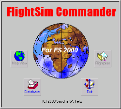

|
|
simFlight.de
> Test |
FightSim
Commander
von Sascha Felix
getested von Robin Breyl
Funktionsübersicht:
Das neue Flugplannungs Tool von Sascha Felix ist "FlightSim
Commander" in der Version 1.0. FlightSim Commander kann seine
Herkunft als Weiterentwicklung des bekannten "FlightSim Planner"
nicht verleugnen. Allerdings hat Sascha Felix der neuen Version eine
solche Menge von Zusatzfunktionen spendiert, so daß "FlightSim
Commander 1.0" wesentlich mehr als ein reiner Flugplaner ist.
Die erste Änderung gegenüber dem Vorgängerprogramm ist die Anpassung
der Datenbestände an MS Flight Simulator 2000. An Flugplanungsfunktionen
stehen herkömmliche Funktionen, wie manuelle oder automatische Erstellung
eines Flugplanes über VORs und NDBs vom Start- zum Zielflughafen.
Zur Flugplanung bietet FlightSim Commander nun auch die Möglichkeit
Szeneriedetails wie Flughäfen als detaillierte Karten darzustellen. So
werden Start- und Landebahnen, sowie Taxiways und Vorfelder in einer
Kartendarstellung von Start- und Zielflughafen dargestellt. Für den
Zielflughafen kann eine einfache Anflugkarte erstellt werden.
 Für
Langstreckenflüge können Großkreisberechnungen verwendet werden. Diese
Methode der Streckenführung wird z.B. auf Flügen von Europa nach Amerika
angewendet. Fliegt man einen direkte Linie von München nach Frankfurt, so
ergibt sich eine Route mit einem konstanten Kompasskurs (ca. 300 Grad).
Will man jedoch von Frankfurt weiter nach New York fliegen, ist die kürzeste
Verbindung eine Linie, die etwas südlich am Nordpol vorbei führt. Als
Folge davon ändert sich permanent der zu fliegende Kurs. Während man
kurz nach dem Start in Frankfurt noch einigermaßen auf Nordkurs ist, so
hat man beim Anflug über Kanada auf den Norden der USA schon einen
deutlichen Südkurs - trotzdem ist das Flugzeug währende der ganzen
Strecke nicht eine Kurve geflogen. Entsprechend aufwendig ist es einen
solchen Kurs zu planen und später auch zu fliegen. Für
Langstreckenflüge können Großkreisberechnungen verwendet werden. Diese
Methode der Streckenführung wird z.B. auf Flügen von Europa nach Amerika
angewendet. Fliegt man einen direkte Linie von München nach Frankfurt, so
ergibt sich eine Route mit einem konstanten Kompasskurs (ca. 300 Grad).
Will man jedoch von Frankfurt weiter nach New York fliegen, ist die kürzeste
Verbindung eine Linie, die etwas südlich am Nordpol vorbei führt. Als
Folge davon ändert sich permanent der zu fliegende Kurs. Während man
kurz nach dem Start in Frankfurt noch einigermaßen auf Nordkurs ist, so
hat man beim Anflug über Kanada auf den Norden der USA schon einen
deutlichen Südkurs - trotzdem ist das Flugzeug währende der ganzen
Strecke nicht eine Kurve geflogen. Entsprechend aufwendig ist es einen
solchen Kurs zu planen und später auch zu fliegen.
 Sascha
Felix hat sein Programm jedoch weit über die Möglichkeiten eines
normalen Flugplaners hinausgehoben, als er er eine Schnittstelle zwischen
FlighSim Commander und dem MS Flugsimulator einbaute. FlightSim Commander
bietet ein eigenes GPS-System, welches zusätzlich an den Autopiloten des
Flight Simulator gekoppelt ist. Ergänzt wird diese Funktion durch eine
"Moving Map", ein Landkartendisplay, welches in das aktuelle
Cockpit eingeblendet werden kann. Sowohl das GPS, als auch die "Moving
Map" sind dabei der GPS Funktion des MS FS 2000 nicht unähnlich und
richten sich wohl in ersten Linie an die Benutzer, die mit dem FS98
unterwegs sind. Derzeit müssen FlightSim Commander und der MS Flight
Simulator noch auf dem gleichen Computer laufen, aber zukünftige
Versionen sollen verteilte Anwendungen, wie z.B. durch den Einsatz von
Wide FS erlauben. Dann kann der Flugsimulator auf einem Computer laufen, während
das GPS und die Moving Map von FlightSim Commander auf einem zweiten
Computer laufen und über eine Netzwerkverbindung die aktuellen Flugdaten
bekommt. Eine sehr interessante Funktion findet sich dabei in der Möglichkeit
Warteschleifen ("Holdings") zu definieren. Diese orientieren
sich jeweils an einem VOR-Funkfeuer. In einer bestimmten Entfernung und
auf einem bestimmten Radial (Kurs) von diesem Funkfeuer wird das Holding
positioniert. Wahlweise können die vier markanten Punkte des Holdings in
den aktuellen Flugplan aufgenommen werden. Alternativ kann das Holding nur
definiert werden, ohne eigene Wegpunkte dafür in den Flugplan einzufügen.
Dann muss der Pilot die Warteschleifen manuell abfliegen. Sascha
Felix hat sein Programm jedoch weit über die Möglichkeiten eines
normalen Flugplaners hinausgehoben, als er er eine Schnittstelle zwischen
FlighSim Commander und dem MS Flugsimulator einbaute. FlightSim Commander
bietet ein eigenes GPS-System, welches zusätzlich an den Autopiloten des
Flight Simulator gekoppelt ist. Ergänzt wird diese Funktion durch eine
"Moving Map", ein Landkartendisplay, welches in das aktuelle
Cockpit eingeblendet werden kann. Sowohl das GPS, als auch die "Moving
Map" sind dabei der GPS Funktion des MS FS 2000 nicht unähnlich und
richten sich wohl in ersten Linie an die Benutzer, die mit dem FS98
unterwegs sind. Derzeit müssen FlightSim Commander und der MS Flight
Simulator noch auf dem gleichen Computer laufen, aber zukünftige
Versionen sollen verteilte Anwendungen, wie z.B. durch den Einsatz von
Wide FS erlauben. Dann kann der Flugsimulator auf einem Computer laufen, während
das GPS und die Moving Map von FlightSim Commander auf einem zweiten
Computer laufen und über eine Netzwerkverbindung die aktuellen Flugdaten
bekommt. Eine sehr interessante Funktion findet sich dabei in der Möglichkeit
Warteschleifen ("Holdings") zu definieren. Diese orientieren
sich jeweils an einem VOR-Funkfeuer. In einer bestimmten Entfernung und
auf einem bestimmten Radial (Kurs) von diesem Funkfeuer wird das Holding
positioniert. Wahlweise können die vier markanten Punkte des Holdings in
den aktuellen Flugplan aufgenommen werden. Alternativ kann das Holding nur
definiert werden, ohne eigene Wegpunkte dafür in den Flugplan einzufügen.
Dann muss der Pilot die Warteschleifen manuell abfliegen.
 Hier
kann eine weitere sehr interessante Funktion von FlightSim Commander
genutzt werden: der virtuelle Flugschreiber. FlightSim Commander kann,
wenn es an den laufenden MS FlghtSimulator gekoppelt wird, eine Reihe
relevanter Flugdaten aufzeichnen. So ist es möglich nach einem erfolgten
Flug diese Daten auszuwerten und zu überprüfen, wie genau man dem
geplanten Kurs gefolgt ist und ob man seine Warteschleifen manuell exakt
abgeflogen ist. Um die Daten aufzuzeichnen, muß FlightSim Commander natürlich
neben dem Flight Simulator laufen. Hier
kann eine weitere sehr interessante Funktion von FlightSim Commander
genutzt werden: der virtuelle Flugschreiber. FlightSim Commander kann,
wenn es an den laufenden MS FlghtSimulator gekoppelt wird, eine Reihe
relevanter Flugdaten aufzeichnen. So ist es möglich nach einem erfolgten
Flug diese Daten auszuwerten und zu überprüfen, wie genau man dem
geplanten Kurs gefolgt ist und ob man seine Warteschleifen manuell exakt
abgeflogen ist. Um die Daten aufzuzeichnen, muß FlightSim Commander natürlich
neben dem Flight Simulator laufen.

Die Wiedergabe der Daten erfolgt dabei leider nicht in Echtzeit,
sondern durch betätigen der Cursortasten kann man sich schrittweise durch
den aufgezeichneten Flug bewegen. Neben der Kartendarstellung kann dabei
eine Instrumentenleiste mit Geschwindigkeitsmesser, künstlichem Horizont
und Höhenmesser eingeblendet werden. Ein Kompass fehlt leider noch.
Ebenso kann ein Höhenprofil dargestellt werden. Auch hier fehlt ein
kleines Detail, denn das Flugzeug wird nicht in das Höhenprofil
eingeblendet, so dass man nicht erkennen kann, an welcher Stelle des
Profiles sich das Flugzeug zu einem gegebenen Zeitpunkt befindet. Wünschenswert
wäre auch noch eine Möglichkeit die Wiedergabe in Echtzeit, oder mit
verschiedenen Abspielgeschwindigkeiten zu realisieren. Allerdings ist die
Aufzeichnungsfrequenz dafür sicherlich noch etwas niedrig.
FlightSim Commander bietet darüber hinaus einen Wettergenerator bei
dem manuell oder auch automatisch Wettersituationen erzeugt werden können.
Es lassen sich bis zu sechs Wetterzonen definieren. Diese Zonen erstrecken
sich über die komplette Flugstrecke. Erzeugt man nur zwei Wetterzonen, so
ändert sich das Wetter einmal während des Fluges. Bei sechs Wetterzonen
erlebt der virtuelle Pilot fünf Wetterwechsel während seines Fluges.
 Abgerundet
wird FlightSim Commander durch ein eigenes Air Traffic Controll System
(ATC). Dieses ist anders realisiert, als bei den meisten bisher erschienen
Produkten. FlightSim Commander erzeugt keine Adventures wie Adventure 2000
oder Radar Contact 99, die vom Flight Simulator abgespielt werden.
Vielmehr erfasst FlightSim Commander ständig die Daten des aktuellen
Fluges und erzeugt zur Situation passende Funksprüche. Der komplette
Funkverkehr wird also nicht mehr von den Funktionen des Flight Simulators
gesteuert, sondern vom externen FlightSim Commander Programm. Abgerundet
wird FlightSim Commander durch ein eigenes Air Traffic Controll System
(ATC). Dieses ist anders realisiert, als bei den meisten bisher erschienen
Produkten. FlightSim Commander erzeugt keine Adventures wie Adventure 2000
oder Radar Contact 99, die vom Flight Simulator abgespielt werden.
Vielmehr erfasst FlightSim Commander ständig die Daten des aktuellen
Fluges und erzeugt zur Situation passende Funksprüche. Der komplette
Funkverkehr wird also nicht mehr von den Funktionen des Flight Simulators
gesteuert, sondern vom externen FlightSim Commander Programm.
Eine Datenbank mit individuellen Flugzeugdaten erlaubt die Berechnung
des erwarteten Treibstoffverbrauches, sowie der idealen Flughöhe und der
geschätzten Reisezeit
 Details: Details:
Die Flugpläne, die von FlightSim Commander erzeugt werden sind kompatibel
zum bisherigen Format von "FlightSim Planner". Damit lassen sie
sich nach wie vor verwenden, um Adventures mit Radar Contact 99 zu
erzeugen. Alternativ können die Flugpläne auch direkt im Format des MS
Flight Simulator 2000 abspeichern und mit dessen GPS und Movingmap
Funktion wieder einladen.
 Als
recht offen programmiertes System bietet FlightSim Commander die Möglichkeit
Ergänzungen zu den Navigationsdaten, die vom Flugsimulator bereitgestellt
werden, einzubinden. So können über eine eigene Datenbanktabelle (MS Access
Format) Kontrollzonen für Flughäfen eingegeben werden, die anschließend
im "Moving Map" Fenster des FlightSim Commanders dargestellt
werden. Dabei wird FlightSim Commander schon mit einer sehr Umfangreichen
Datenbank ausgeliefert, in der ich die Kontrollzonen um alle größeren
deutschen Flughäfen gefunden habe. Ebenso können Pflichtmeldepunkte
eingegeben und später dargestellt werden. Pflichtmeldepunkte kennzeichnen
fixe Orte, an denen ein unkontrolliert fliegendes Flugzeug (nicht vom
Boden Radar gesteuert), in eine Kontrollzone einfliegt. Als
recht offen programmiertes System bietet FlightSim Commander die Möglichkeit
Ergänzungen zu den Navigationsdaten, die vom Flugsimulator bereitgestellt
werden, einzubinden. So können über eine eigene Datenbanktabelle (MS Access
Format) Kontrollzonen für Flughäfen eingegeben werden, die anschließend
im "Moving Map" Fenster des FlightSim Commanders dargestellt
werden. Dabei wird FlightSim Commander schon mit einer sehr Umfangreichen
Datenbank ausgeliefert, in der ich die Kontrollzonen um alle größeren
deutschen Flughäfen gefunden habe. Ebenso können Pflichtmeldepunkte
eingegeben und später dargestellt werden. Pflichtmeldepunkte kennzeichnen
fixe Orte, an denen ein unkontrolliert fliegendes Flugzeug (nicht vom
Boden Radar gesteuert), in eine Kontrollzone einfliegt.
 Sascha
Felix bietet eine Datenbank mit allen Navigationseinrichtungen, die im
FS2000 enthalten sind zum Download (4,5 MB) an. Alternativ kann sich jeder
Benutzer auch aus den Szenerie-Files, die auf seinem Computer installiert
sind, eigene Datenbanken erzeugen. Zu diesem Zweck bietet FlightSim
Commander die Möglichkeit AFD.bgl bzw. nur .BGL Dateien auszulesen und
daraus Datenbanken zu erstellen. Sascha
Felix bietet eine Datenbank mit allen Navigationseinrichtungen, die im
FS2000 enthalten sind zum Download (4,5 MB) an. Alternativ kann sich jeder
Benutzer auch aus den Szenerie-Files, die auf seinem Computer installiert
sind, eigene Datenbanken erzeugen. Zu diesem Zweck bietet FlightSim
Commander die Möglichkeit AFD.bgl bzw. nur .BGL Dateien auszulesen und
daraus Datenbanken zu erstellen.
Für das Management dieser Datenbanken bietet FlightSim Commander eine
ganze Reihe von Funktionen, die es dem Anwender erlauben durch eine
Vorauswahl das Gebiet in dem Navigationsdaten eingeladen werden sollen zu
beschränken. Ziel ist es sicherlich hier dem Anwender eine möglichst
Hohe Darstellungsgeschwindigkeit zu bieten.
 Viele
Flugplaner, die ich mir in der Vergangenheit angesehen habe, krankten
selbst auf meinem P3/500 mit 256MB Ram an sehr langsamen
Bildschirmaufbauzeiten. FlightSim Commander besticht hier schon in den
Default-Einstellungen durch so rasante Aufbauzeiten, daß für mich keine
Wünsche offen bleiben. Wahlweise lassen sich "Intersection" und
"Taxiways" als Kartenelemente separat hinzuladen, was natürlich
zu lasten der Anzeigegeschwindigkeit geht. Viele
Flugplaner, die ich mir in der Vergangenheit angesehen habe, krankten
selbst auf meinem P3/500 mit 256MB Ram an sehr langsamen
Bildschirmaufbauzeiten. FlightSim Commander besticht hier schon in den
Default-Einstellungen durch so rasante Aufbauzeiten, daß für mich keine
Wünsche offen bleiben. Wahlweise lassen sich "Intersection" und
"Taxiways" als Kartenelemente separat hinzuladen, was natürlich
zu lasten der Anzeigegeschwindigkeit geht.
Die Kartendarstellung enthält unter anderem Küstenlinien. Einzelne
Teile der Anzeige, wie NDBs oder VORs, Intersections und Flughäfen lassen
sich einzeln ein- und ausschalten. Die dargestellte Karte läßt sich sehr
schnell über die Tastatur (BildAuf und BildAb Tasten) Zoomen. Bei
entsprechend hohen Zoomstufen werden Details, wie Flughafengelände mit
Rollwegen und Vorfeldern erkennbar. Innerhalb der Karte können jederzeit
Entfernungen abgemessen werden. Details zu speziellen Navigationspunkten können
in kleinen Fenstern in die Karte eingeblendet werden. Diese Fenster können
beliebig verschoben werden, um einen übersichtlichen Ausdruck zu gewährleisten.
Der dargestellte Kartenausschnitt kann jederzeit mit einem Mausklick
verschoben werden.
 SIDs
und STARs: SIDs
und STARs:
Gerade auf dem Gebiet der SIDs und STARs (Standard An- und Abflugrouten zu
großen Flughäfen), habe ich bisher noch keine befriedigende Umsetzung
bei einem Flugplaner gesehen. FlightSim Commander bietet hier ein eigene Lösung,
die ich mit etwas gemischten Gefühlen betrachte. FlightSim Commander
generiert aus dem ersten Funkfeuer nach dem Start bzw. dem letzten
Funkfeuer vor der Landung und der entsprechenden Start- bzw. Landebahn
eine eigenes SID bzw. STAR.
Diese haben jedoch nichts mit realen SIDs oder STARs gemein, die man in
existierenden Jeppesen Karten finden kann. Wenn man hier auf den
hundertprozentigen Realismus verzichten kann, bietet FlightSim Commander
mit eine der einfachsten und unkompliziertesten Umsetzungen dieser
Thematik, die ich kenne. Allerdings kann man nur die Anflugkarten
verwenden, die man selbst mit FlightSim Commander nach erfolgter
Flugplanung ausgedruckt hat. Diese An- und Abflüge sind nicht kompatibel
zu den SIDs und STARs, wie sie z.B. in EFIS98 umgesetzt werden und schon
gar nicht mit den realen offiziell veröffentlichten SIDs und STARs.
 Intersections
und Airways: Intersections
und Airways:
FlightSim Commander besticht durch eine solche Vielfalt von Funktionen und
durch eine so große Anzahl von Details, daß ich zunächst nicht glauben
konnte, daß Airways (Luftstraßen, auf denen sich üblicherweise Großraumflugzeuge
bewegen) nicht umgesetzt sind. Nach einigem Suchen im Programm habe ich
Sascha Felix per eMail danach gefragt, und er hat mir bestätigt, daß
Airways derzeit von FlightSim Commander nicht unterstützt werden. Sascha
Felix plant jedoch, dies in einer späteren Version nachzubessern. Wer
meinen letzten Testbericht (Radar Contact 99) kennt, weiß, daß ich gerne
innereuropäische Flüge mit Fliegern, wie der 737 mit dem FS2000 fliege. Gerade
bei solchen Flügen, oder auch bei Interkontinentalflügen für die
FlightSim Commander ja sogar die Möglichkeit der Großkreis-Navigation
bietet, ist das Fehlen von Airways eigentlich ein KO-Kriterium. Um so
unverständlicher erscheint mir das Fehlen der Airways, wenn ich bedenke, dass
sie in den Standard-Datenbanken des FS2000 enthalten sind und eigentlich
nur zusammen mit den anderen Navigationsdaten mit ausgelesen werden müssten.
Ich hoffe sehr, dass dieses Feature möglichst bald nachgereicht werden
kann.
GPS und ATC:
Durch die neuen Module von FlightSim Commander, die eine direkte Kopplung
an den Flight Simulator erlauben, wird das Programm zu einem GPS mit
automatischer Kartendarstellung (Moving Map). Ganz nebenbei simuliert
FlightSim Commander noch den Funksprechverkehr während des Fluges.
Augenblicklich muss dabei FlightSim Commander noch auf dem gleichen
Computer laufen, wie der Flight Simulator selbst. In der nächsten Version
vom FlightSim Commander wird eine Kopplung über das Netzwerk und somit
eine Verteilung auf zwei Computer möglich sein.
Das GPS stellt vier verschiedene Seiten bzw.Modi zur Verfügung, mit
folgenden Daten: Position, inkl. Höhe, Geschwindigkeit über Grund und
wahre Luftgeschwindigkeit (TAS), sowie Kursdaten (rechtsweisend,
missweisend, Vorhaltewinkel und Missweisung). Im Flugplanmodus werden
Informationen über den nächsten Wegpunkt (NDB-, VOR-Frequenz), den
Zielflughafen (Landebahn, ATIS-Frequenz, Entfernung) angezeigt. Zusätzlich
können Wetterdaten, wie Windgeschwindigkeit und Windrichtung angezeigt
werden. Im Flugplanmodus können allerdings keine beliebigen Punkte als
Wegpunkte definiert werden, sondern nur solche Navigationspunkte (VOR, NDB,
Intersection), die im Flugplaner ausgewählt werden können.
Das GPS kann den Autopiloten des Flight Simulator steuern, bzw. dessen
Kurs-, Höhen- und Geschwindigkeitswerte einstellen. Dabei kann das GPS
den kompletten Flugplan abfliegen, den man zuvor erstellt hat. Ein Direct-To
Modus erlaubt sofort von der augenblicklichen Position zu einem ausgewählten
Navigationspunkt zu fliegen.
Zusätzliche Fenster können eingeblendet werden, die einmal die
aktuelle Position (horizontal oder vertikal) des Flugzeuges beim
Landeanflug darstellen. Dies stellt ein hervorragendes Mittel dar, um
seine manuellen Flugfertigkeiten zu überwachen und zu trainieren.
Zusätzlich kann die erwähnte Moving Map in das aktuelle Panel
eingebunden werden, um die aktuelle Position und die umgebenden
Navigationshilfen darzustellen. Hier können auch die selbst definierten
Kontrollzonen und Pflichtmeldepunkte eingeblendet werden, was für den
Piloten, der vom unkontrollierten Flug in den Luftraum eines größeren
Flughafen eindringt, von großem Interesse sein kann. Ob die Moving Map
darüber hinaus einen Wert im Einsatz unter FS2000 hat, wage ich zu
bezweifeln - für Benutzer der älteren Version FS98 ist es jedoch eine Möglichkeit
eine gute und unkomplizierte Moving Map darzustellen.

Über das GPS Fenster wird auch die Kommunikation mit dem virtuellen
Fluglotsen abgewickelt. Ein Knopf im GPS öffnet den Funkkanal auf der
aktuell ausgewählten Frequenz. FlightSim Commander erkennt nun anhand der
Flugdaten, die es vom Flight Simulator bekommt, die aktuelle Flugsituation
und generiert den entsprechenden Funkspruch. Dabei hat FlightSim Commander
ein eigenes Verzeichnis mit Sound-Dateien (WAV-Format), die der Benutzer
bei Bedarf beliebig anpassen oder auch selbst besprechen kann. Die Sprachqualität
ist dabei ebenso gut, wie bei herkömmlichen Adventures. Zwei
weitere Knöpfe auf dem GPS dienen dazu eine neue Flughöhe anzufordern,
wenn dem Piloten die aktuell zugewiesene Höhe nicht zusagt, z.B. wegen
starker Turbulenzen oder ungünstigen Winden. Der dritte Button sendet
entweder einen Notruf, oder meldet einen gescheiterten Anflug (Missed
Approach), je nach aktueller Flugsituation. Bei einem Notfall wird man per
Funk zum nächsten Flughafen geleitet und auf eine günstige Landebahn geführt.
Dies kann auch vom Autopiloten geflogen werden. Bei einem gescheiterten
Anflug wird man, wie üblich um den Platz herum zu einem neuen Landeanflug
geführt.
Fazit:
Als Flugplaner ist FlightSim Commander alleine im Bildaufbau der Konkurrenz
ein ganzen Stück voraus. Möglichkeiten per Tastendruck schnell und
unkompliziert zu zoomen, runden die Darstellungsqualität ab.
Zusatzinformationen wie Anflugkarten, SIDs und STARs (wenn auch nicht
realistisch), so wie Treibstofftabellen lassen kaum Wünsche offen.
Kontrollzonen und Pflichtmeldepunkte dürften ein Leckerbissen für den
ambitionierten VFR Piloten darstellen. Um so bitterer wiegt das Fehlen der
Luftfahrtstraßen, die mittlerweile schon von einige Konkurrenzprodukten
umgesetzt wurden (unter Anderem dem FS2000 eigenen Flugplaner). Wäre
dieses letzte Feature umgesetzt, so wäre im FlightSim Commander der
perfekte Flugplaner für mich.
Die restlichen Funktionen heben FlightSim Commander weit über einen
herkömmlichen Flugplaner hinaus. Allerdings kann hier nicht ganz die
Komplexität spezialisierter Adventure-Generatoren erreicht werden. Der
technische Ansatz den Funkverkehr ohne Adventure umzusetzen ist sicherlich
interessant. Die Umsetzung bietet dabei Features, die ich schon lange in
anderen Adventure-Generatoren vermisst habe, wie z.B. die Meldung von Notfällen
oder die Bitte um eine andere Flughöhe, als die zugeteilte. Letztlich
erreicht die Qualität des Funkverkehrs jedoch nicht das Niveau von
spezialisierten Programmen wie Radar Contact 99. Ich vermute, dass Sascha
Felix eher dem Einsteiger oder dem ambitionierten VFR-Piloten die Möglichkeit
bieten möchte, vom Cockpit seiner Cessna 182 aus ein wenig in die Welt
des Funksprechverkehrs hineinzuschnuppern. Wer den Funksprechverkehr
kommerzieller Linienflüge sucht, wird sicherlich enttäuscht, aber für
kurze Flüge mit Kleinflugzeugen macht diese Art des Funkverkehrs durchaus
eine Menge Spaß. Perfekt wäre es natürlich, wenn der Funksprechverkehr
auch auf das Einfliegen in Kontrollzonen und das Passieren von
Pflichtmeldepunkten reagieren würde. Das scheint mir derzeit jedoch noch
nicht der Fall zu sein.
Abschließend realisiert die Funktion des Flugdatenschreiber mit
der entsprechenden Auswertungsmöglichkeiten ein Feature, dass ich schon
immer im Flight Simulator vermisst habe. Als ich vor vielen Jahren mal
beim Pilotentest der Deutschen Lufthansa war (erfolglos), verwendeten die
Prüfer genau so ein Verfahren, um die Genauigkeit meiner simulierten Flüge
zu überprüfen. Hier bietet sich also eine ideale Möglichkeit, um die
Exaktheit seiner Flüge zu trainieren. Dies gilt ganz genauso für die
Echtzeitüberwachung von ILS-Landeanflügen, die z.B. in den echten
Lufthansa Simulatoren auch jederzeit zur Verfügung steht. Für mich sind
diese Funktionen das heimliche Highlight des neuen FlightSim Commanders,
auch wenn sie in der Dokumentation eher nur nebenbei Erwähnung finden.
Unter dem Strich bleibt ein nahezu perfekter Flugplaner übrig, der
durch die Ergänzung von GPS und ATC mehr sein möchte als ein Flugplaner.
Damit ist FlightSim Commander wieder ein ganz typischer Vertreter der
Gruppe von Zusatzprogrammen für den Flight Simulator, die über eine
Unmenge von Features verfügen und auf ein oder zwei Gebieten wirklich brillant
sind. Auf anderen hinken sie dafür Konkurrenzprodukten mitunter weit
hinter her. Wer rundum versorgt sein möchte kommt im Flight Simulator
Umfeld nicht umhin eine ganze Reihe von Zusatzprogrammen zu erwerben.
Alle Versuche ein Programm für Alles zu schreiben sind bisher
immer an Grenzen gestoßen, die von spezialisierten Tools weit überschritten
wurden. Robin Breyl
robin@breyl.de
10. März 2000
|
INFORMATION
|
DATEIEN
|
TEST SYSTEM
- P3/500, 256MB Ram, Voodoo3, SB Live!,
FS98, FS2000Pro mit Patch
|
|
|
|

|


{kind=link}
{kind=link}